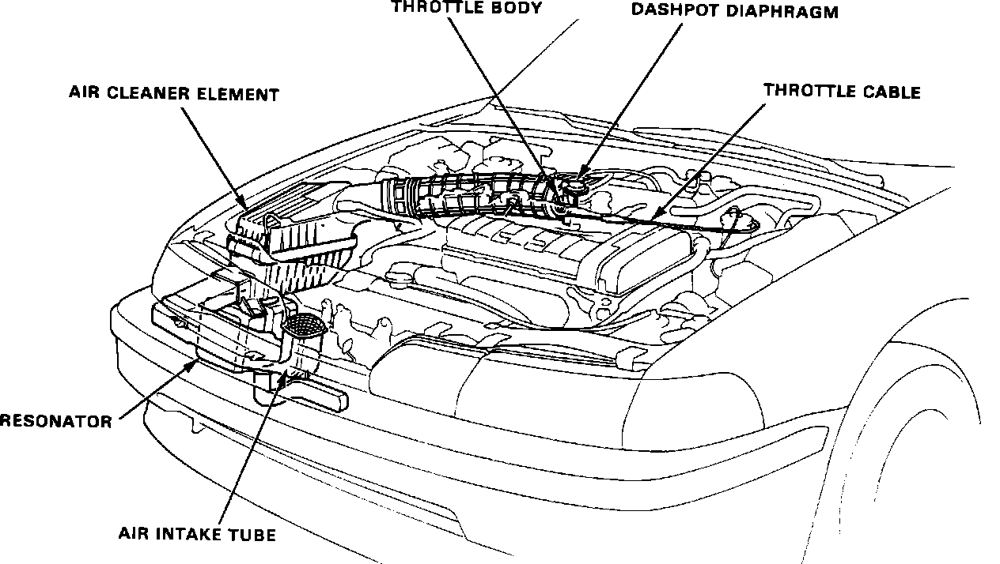

Air Cleaner Housing: Testing and Inspection
Air Intake System:

Remove Air Cleaner filter element from Air Cleaner box and visually inspect. Replace filter element if it appears dirty, oil saturated, or if the scheduled maintenance interval has been reached.
Because the Air Cleaner is a normal service item, it is recommended that the Air Cleaner filter element be replaced at it's normal service interval or if a defect is suspected. Refer to "MAINTENANCE PROCEDURES" and "COMPONENT REPLACEMENT AND REPAIR PROCEDURES"